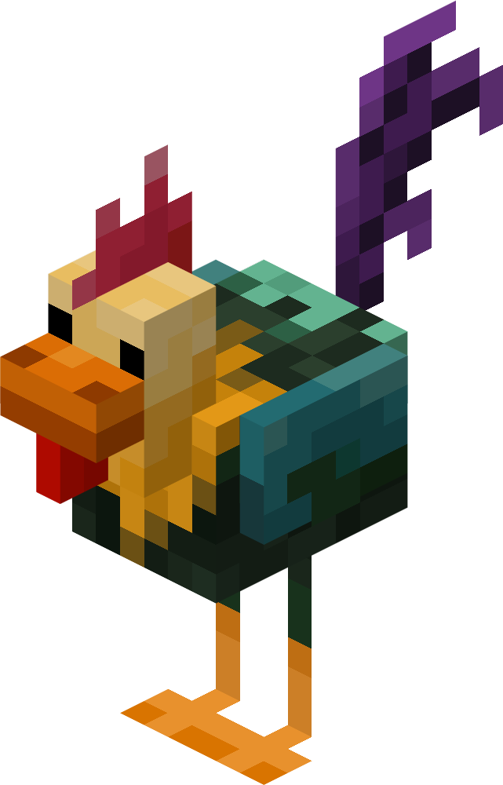

VIDA NA REALIDADE, VIVA EM
Hipercraft
Nossa versão foi lançada oficialmente em 10 de dezembro de 2025
[Imagem de personagens e texto]
EQUIPE
Formada por Athur Biehl(CEO), Camille Ferreira(COO), Flávia Silva(CTO) e Gabriely Mello(COO), Cada um assumiu sua parte no trabalho, porém todos souberam se ajudar e organizar tanto a sua como a parte do colega, como criar mods, o site e o relatório.
[Imagem da cidade escura]
PROJETO
Criado com o intuito de reformular e aprimorar um jogo já existente, o projeto nasceu do desejo da nossa equipe de deixá-lo exatamente do jeito que imaginávamos:
mais estiloso, mais organizado e com uma aparência muito mais atrativa.
MOD CRIADO

Ciamos um mod de galo para o jogo Hipercraft começando por pesquisar como os mods funcionam.
Depois, fizemos o modelo e a textura do galo, deixando ele combinando com o estilo do jogo.
Em seguida, programmos o comportamento dele, como movimentos, sons e onde aparece no mapa.
Após testar várias vezes tudo funcionou direitinho.
No final, ver o galo dentro do jogo foi super satisfatório e mostrou o quanto aprendemos sobre design e programação.